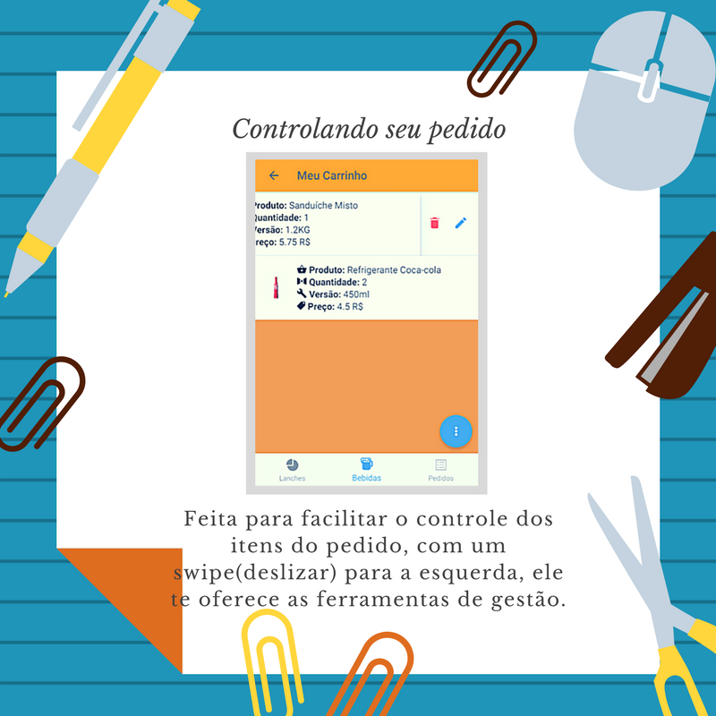
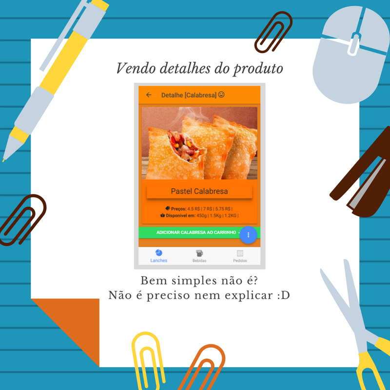

<!--
  Generated template for the HomeSlidePage page.

  See http://ionicframework.com/docs/components/#navigation for more info on
  Ionic pages and navigation.
-->
<ion-header>

 <!--  <ion-navbar>
    <ion-title>home-slide</ion-title>
  </ion-navbar>
 -->
</ion-header>


<ion-content>
	<ion-slides pager>
  <ion-slide style="background-color: #79A7F1">

    
    <button ion-button (click)="irAplicativo()" icon-right>
    	Skip
    	<ion-icon name="exit"></ion-icon>
	</button>
  </ion-slide>

  <ion-slide style="background-color: #CB1313">
    
    <button ion-button (click)="irAplicativo()" icon-right color="danger">
    	Skip
    	<ion-icon name="exit"></ion-icon>
	</button>
  </ion-slide>

  <ion-slide style="background-color: #9CEA49">
    
 <button ion-button (click)="irAplicativo()" icon-right color="secondary">
    	Skip
    	<ion-icon name="exit"></ion-icon>
	</button>
  </ion-slide>

  <ion-slide style="background-color: #BFC0B3">
  
 <button ion-button (click)="irAplicativo()" icon-right color="light">
    	Skip
    	<ion-icon name="exit"></ion-icon>
	</button>
</ion-slide>
 <ion-slide style="background-color: #FF8C00">
  
   <button ion-button (click)="irAplicativo()" icon-right>
    	Ir para o aplicativo
    	<ion-icon name="home"></ion-icon>
	</button>
</ion-slide>
</ion-slides>
</ion-content>
